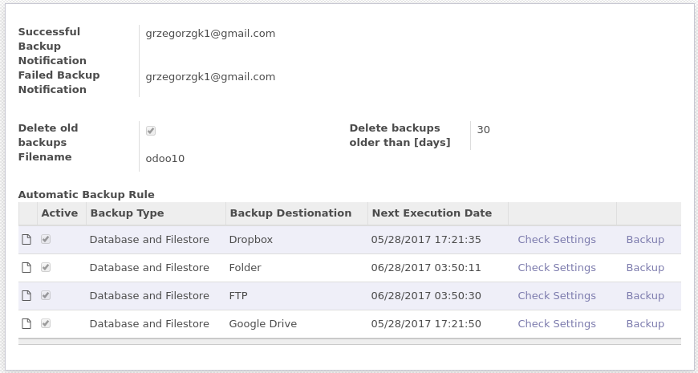
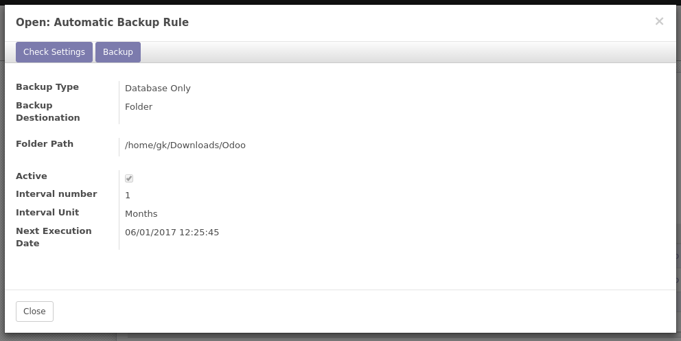
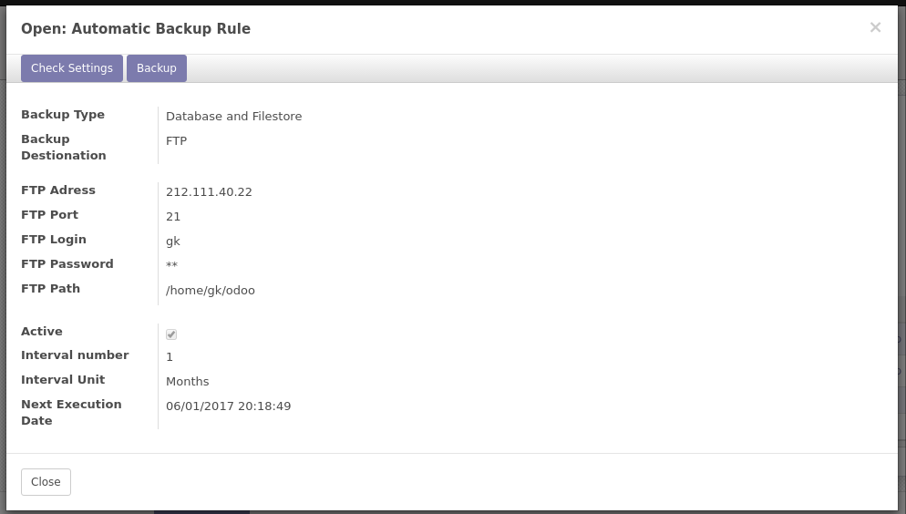
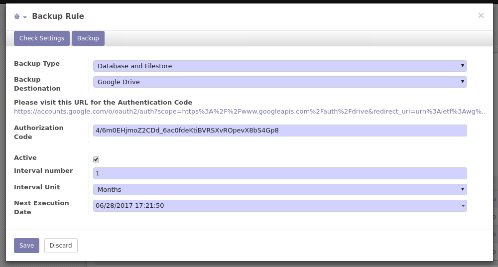
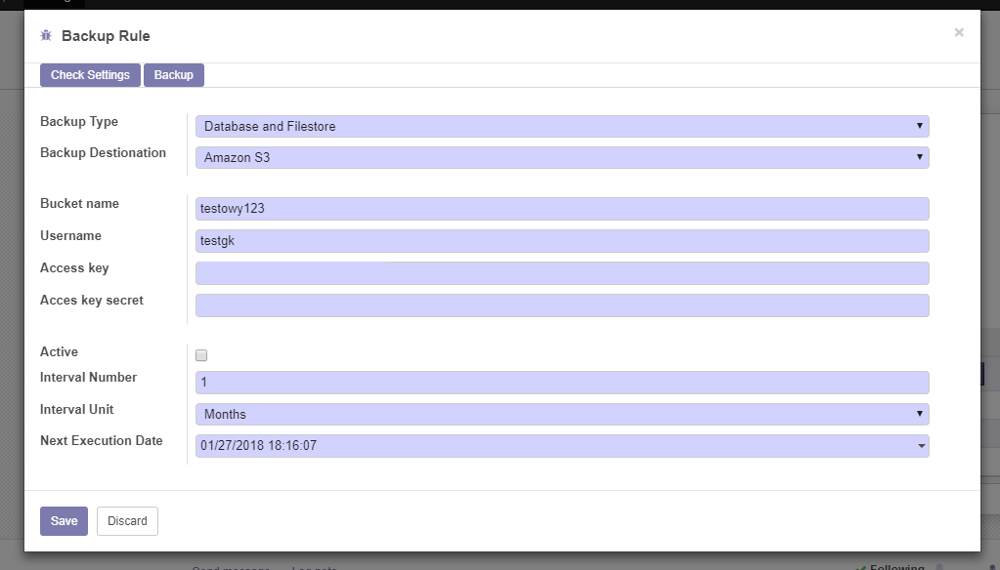

Odoo Automatic Database Backups
Manage automatic backup rules

Backup only database or database and all files

Backup to selected folder or to remote server via FTP or SFTP

Backup to your Dropbox cloud storage

Backup to your Google Drive

Backup to Amazon S3
